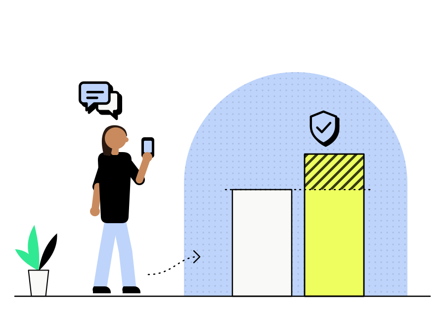

Caso 02 · OmnichatAgentic Experience · Agentes conversacionais
Redesenhando a verificação de intenção dos agentes conversacionais
A maior perda de conversão não estava na interface. Estava na camada onde a intenção do lead entra no sistema.
Duração
4 meses, com 8 semanas de medição em produção
Jeff
Product Design Manager, responsável pelo desenho da camada de decisão e pelo recorte do experimento
Time
2 engenheiros de IA e 1 analista de dados

A fronteira de entrada, com a conversão de antes e de depois.
De 24%para 32%
A conversão de leads qualificados nas origens redesenhadas, medida em produção ao longo de 8 semanas sobre cerca de 40 mil conversas, comparando com o fluxo anterior no mesmo período.
A Omnichat opera agentes de vendas conversacionais que atendem leads em escala, vindos de origens diferentes. Cada origem carrega um tipo de intenção, e o agente tratava todo lead do mesmo jeito, como se toda conversa começasse do zero.
Não existia visão clara da jornada conversacional. O time via o resultado final, lead convertido ou lead perdido, mas não enxergava o caminho entre a mensagem de entrada e a decisão do agente.
O erro não era de capacidade do modelo, era de design. A fronteira onde a intenção do lead entra no sistema ficava por conta do acaso de cada canal de origem.
Instagram. Chegavam com um objetivo implícito, moldado pelo anúncio que clicaram. O agente não tinha acesso a esse contexto e tratava a primeira mensagem como uma pergunta genérica.
Disparos de WhatsApp. Chegavam ainda mais comprimidos, muitas vezes respondendo a um gatilho automático sem nunca ter formulado a própria intenção com clareza.
Cinco camadas de um artefato de design
Camada 01
A arquitetura de prompt como superfície de design
Parar de tratar o prompt como configuração técnica. Cada ponto em que o agente decide algo, seguir a conversa, pedir mais contexto ou escalar para um vendedor, virou um ponto de decisão desenhado com intenção, no mesmo nível de uma interface visual. Efeito. Tornou a conversa um objeto de design, com pontos de falha localizáveis em vez de um resultado opaco.
Camada 02
Jornada mapeada por origem do lead
Em vez de um fluxo único, a entrada da conversa virou uma fronteira distinta por canal. Leads de Instagram passaram a receber uma pergunta inicial que resgata o contexto do anúncio. Leads de disparos de WhatsApp ganharam uma etapa extra de verificação de intenção. Efeito. Recuperou contexto que antes se perdia no primeiro turno, justamente nas duas origens de maior perda.
Camada 03
Limites de decisão do agente redesenhados
A primeira ideia do time era fazer o agente sempre pedir confirmação antes de ofertar. Descartamos porque isso adicionava um turno em toda conversa e derrubava a conversão de quem já chegava com intenção clara. Optamos por um limite condicionado à origem: com a intenção confirmada o agente segue com a oferta sozinho, e havendo sinal de ambiguidade ele para e verifica antes de agir. Efeito. Reduziu ofertas erradas apresentadas cedo demais, um dos principais pontos de abandono.
Camada 04
Leitura de desvio no lugar de leitura completa
O time passou a revisar apenas os pontos em que a conversa fugiu do padrão esperado para aquela origem, em vez de ler transcrições inteiras. Efeito. Permitiu revisar volume alto de conversas em pouco tempo e ajustar a fronteira de entrada com base em dado real.
Camada 05
Teste controlado em produção
Rodar o redesenho em produção com testes controlados, comparando taxa de conversão por origem antes e depois, em vez de validar a mudança isolada em ambiente de teste. Efeito. Isolou o ganho de 8 pontos na conversão de leads qualificados por origem de lead.
O mesmo lead de Instagram, nas duas versões da fronteira de entrada
Antes. Conversa abandonada
LeadOi, vi aqui no Instagram e queria saber mais
AgenteOlá! Tudo bem? Posso te ajudar com informações sobre nossos produtos. Qual o seu nome?Trata a primeira mensagem como pergunta genérica
LeadÉ sobre aquilo que apareceu no anúncio
AgenteTemos várias opções disponíveis. Quer fechar o plano anual em 12x sem juros?Oferta apresentada antes de a intenção existir
Lead…Conversa abandonada no quarto turno
Depois. Lead convertido
LeadOi, vi aqui no Instagram e queria saber mais
AgenteOi! Você chegou pelo anúncio da campanha de inverno. É sobre isso que quer falar, ou é outro assunto?Camada 02, jornada por origem
LeadÉ sobre isso mesmo
AgenteFechado. Antes de te passar valores, só confirmando: é para uso próprio ou para revenda?Camada 03, verifica antes de ofertar
LeadUso próprio
AgenteEntão a opção que faz sentido é a que estava no anúncio, com entrega para a sua região. Quero já reservar para você?Camada 03, segue sozinho com a intenção confirmada
LeadPode reservar sim
O agente parou de responder à mensagem e passou a responder à intenção
A conversão de leads qualificados subiu 8 pontos, medida pela taxa dos agentes de vendas conversacionais. O ganho não veio de uma oferta melhor nem de um texto mais persuasivo.
Veio das duas origens que mais perdiam conversão antes da mudança, Instagram e disparos de WhatsApp.
Números do resultado
+8%
de conversão de leads qualificados, de 24% para 32%
~40 mil
conversas comparadas em produção
8 semanas
de medição contra o fluxo anterior no mesmo período
2 origens
redesenhadas, Instagram e disparos de WhatsApp
O que eu levo daqui
A interface não é mais o objeto principal do trabalho. O objeto é a decisão.
O que o agente pode decidir sozinho, o que ele precisa verificar antes de agir e como mostra isso para quem precisa confiar no resultado. Desenhar bem essa camada foi o que gerou o ganho de conversão.
Trabalho com design de decisão em produtos conversacionais. Se esse tipo de camada é um problema no seu produto, me chama no WhatsApp ou veja o próximo caso.